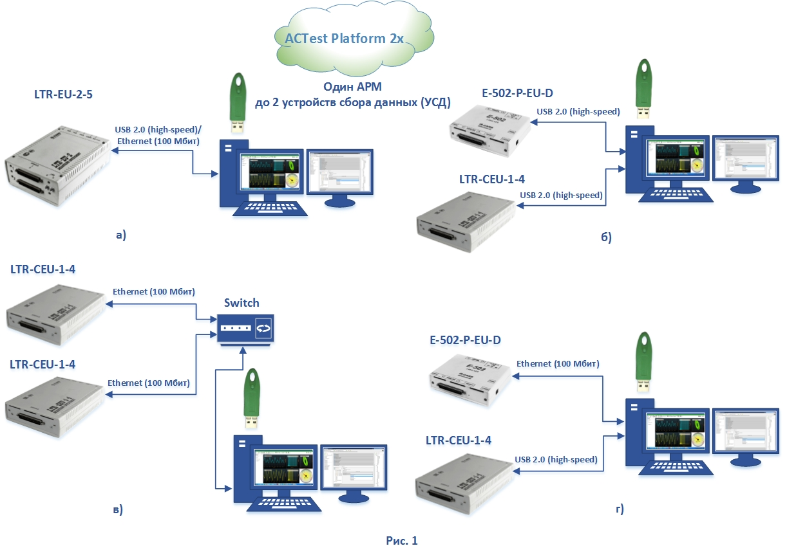
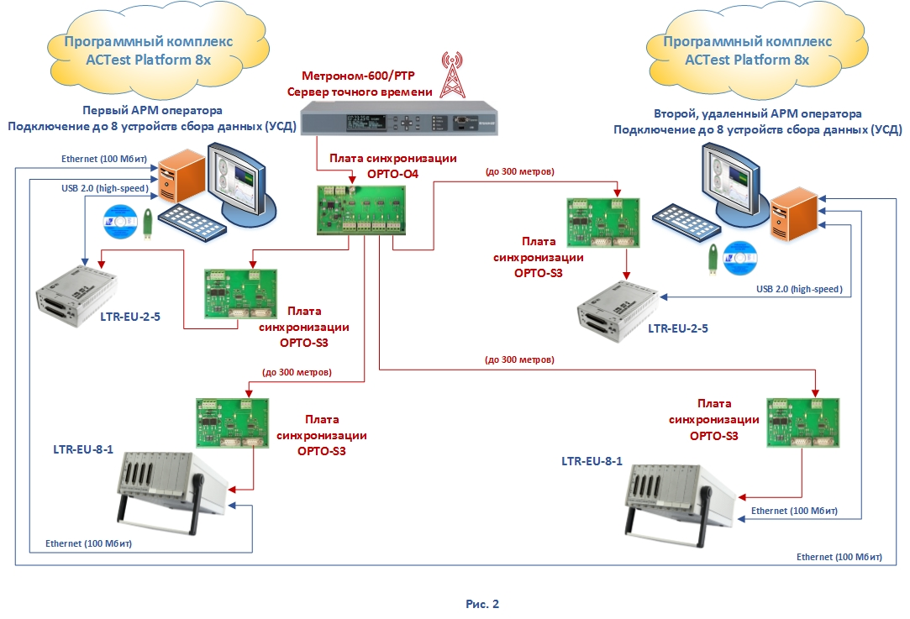
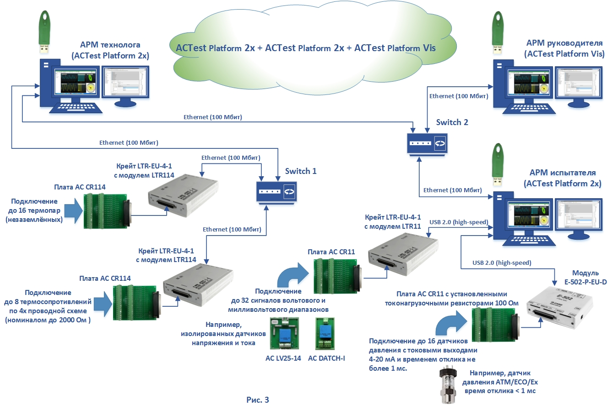
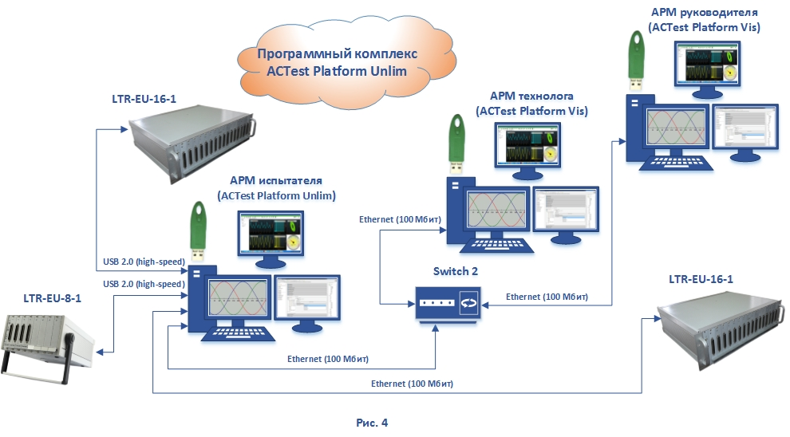

")
ACTest Platform - программный копмплекс для автоматизации измерений
Автоматизация измерений и испытаний. Прикладное ПО для информационно-измерительных систем, систем сбора данных и систем мониторинга, от портативных до распределенных и многоуровневых. Модификации, цены и примеры создания автоматизированных систем.
Программный комплекс ACTest Platform© – универсальное, прикладное, конфигурируемое программное обеспечение для автоматизации измерений и испытаний, создания различных информационно-измерительных систем, от портативных и переносных до многоканальных и распределенных систем автоматизации крупных технологических установок или технологических процессов предприятия и организации обмена данными между большим числом технологических автоматизированных рабочих мест (АРМ).
Программный комплекс ACTest Platform© функционирует под управлением ОС Windows 10 Professional 64-bit. Настройки в комплексе осуществляются с помощью диалоговых окон без использования языков программирования. Комплекс может функционировать как на одиночном компьютере, так и с использованием сетевых, клиент-серверных технологий в рамках распределенной системы сбора и обработки данных.
ACTest Platform 2x, ACTest Platform 8x и ACTest Platform 16x - это полноценные модификации, включающие все приложения Программного комплекса ACTest Platform:
- Приложение для контроля доступа к АРМ (ACTest Администратор);
- Приложение для управления справочной информацией (ACTest Редактор справочников);
- Приложение конфигурирования и настройки параметров системы измерения (ACTest Конфигуратор);
- Приложение визуализации данных в реальном времени (ACTest Визуализатор);
- Приложение метрологической поддержки систем (ACTest Метрология);
- База данных (ACTestDB);
- Программный комплекс послесеансной обработки экспериментальных данных ACTest Analyzer.
Это полноценные прикладные программные продукты позволяющие создавать различные информационно-измерительные системы или системы сбора данных и мониторинга, включающие в себя практически все функциональные возможности, например: настройку оборудования, задание измерительных параметров, создание расчетных параметров, настройка регистрации, запуск и диагностика системы, экспорт или импорт данных, мониторинг данных и построение графиков, допусковый контроль, управление градуировками, определение метрологических характеристик, управление справочниками, послесеансная обработка и анализ данных.
Модификации Программного комплекса ACTest Platform 2x, ACTest Platform 8x и ACTest Platform 16x имеют одинаковые функциональные возможности по созданию полноценных систем с одним автоматизированным рабочим местом (одним АРМ) и отличаются только числом одновременно задействованных в работе устройств сбора данных (УСД), на примере продукции компании “Л Кард” это могут быть:
- Модули аналогового или дискретного ввода-вывода из состава модульной системы LTR: LTR11, LTR114, LTR24-1, LTR24-2, LTR27, LTR51, LTR212M-1, LTR212M-2, LTR41, LTR43;
- Многофункциональные модули АЦП / ЦАП с интерфейсами USB & Ethernet: E-502-X-U-X, E-502-X-EU-X, E-502-X-U-D, E-502-P-EU-D и E-502-P-EU-D-I.
- Примеры применения Программного комплекса ACTest Platform 2x для создания систем автоматизации измерений с числом устройств сбора данных (УСД) не более двух отображены на рисунке 1:
Рис. 1-а это небольшая автоматизированная система измерений с ближним чрез USB 2.0 (high-speed) или удаленным через Ethernet (100 Мбит) подключением двухместного крейта LTR-EU-2-5 с двумя модулями LTR (двумя УСД);
Рис. 1-б аналогичная автоматизированная система измерений с ближним, чрез USB 2.0 (high-speed), подключением двух одноместных крейтов LTR-CEU-1-4 с модулями LTR (двух УСД);
Рис. 1-в распределенная удаленная система с применением сетевых технологий подключения двух одноместных крейтов LTR-CEU-1-4 с модулями LTR (двух УСД);
Рис. 1-г распределенная система автоматизации измерений с различным (по USB 2.0 (high-speed и Ethernet (100 Мбит), одновременным подключением двух устройств сбора данных (УСД) разного типа – двух УСД с различными аппаратными и программными интерфейсами.

В данном примере по четыре устройства сбора данных (УСД) располагаются в восьмиместных крейтах LTR-EU-8-1 и по два УСД располагаются в двухместных крейтах LTR-EU-2-5 и – всего в сумме по 6 УСД (модулей АЦП) для каждого автоматизированного рабочего места (АРМ) оператора. И применено два вида подключений, когда крейты LTR-EU-2-5 располагаются на автоматизированных рабочих местах и подключаются по USB 2.0 (high-speed) и два крейта LTR-EU-8-1 с удаленным расположением подключаются к своим АРМам по Ethernet (100 Мбит).
Так как каждый комплект программного комплекса ACTest Platform 8x допускает подключение до 8-ми УСД (модулей АЦП), то в данной системе заложена возможность расширения по числу измерительных каналов. Например для данной системы в каждый крейт LTR-EU-8-1 можно будет дополнительно установить и применить по два дополнительных модуля АЦП.

Дополнительно на рисунке 2 красным цветом приведен пример реализации системы синхронизации сбора данных от сигналов точного времени ГЛОНАСС / GPS для больших распределенных систем автоматизации измерений.
Коммутационное оборудование для систем синхронизации (устройства синхронизации Opto-o4 (передатчик) и Opto-s3 (приемник)), производства компании “Лаборатория автоматизированных систем (АС), предназначено для гальваноизолированного подключения и передачи сигналов синхронизации от сервера точного времени Метроном-600 производства "Прайм Тайм Проджект" на крейты LTR производства “Л Кард”, это аппаратная и программная поддержка серверов единого времени по протоколу IRIG B006, возможность формата "секундной метки" с временем-датой от сервера единого времени.
Для создания многоуровневых распределенных систем автоматизации больших технологических установок или целых предприятий необходимо создание дополнительных автоматизированных рабочих мест для выполнения административных функций: управления пользователями и разрешениями, управление справочной информацией с другими источниками через встроенные механизмы экспорта/импорта данными, анализа результатов и составления отчетов. Именно для таких задач и предназначен Программный комплекс ACTest Platform Vis - АРМ визуализации, получение данных только по сети с других АРМ.

При этом сбор данных производят только два автоматизированных рабочих места, созданных на основе двух Программных комплексов ACTest Platform 2x, каждый из которых, в свою очередь, производит сбор данных с двух устройств сбора данных (УСД). Например, АРМ технолога контролирует условия проведения испытаний и производит регистрацию медленно меняющихся параметров (ММП), с удаленным подключением устройств сбора данных (УСД) по Ethernet (100 Мбит). АРМ испытателя располагается на испытательном стенде и, например, производит регистрацию быстро переменных параметров объекта испытаний, с подключением устройств сбора данных (УСД) по интерфейсу USB 2.0 (high-speed).
Третье автоматизированное рабочее место – АРМ руководителя создан с применением Программного комплекса ACTest Platform Vis и работает только с данными полученными по сети и зарегистрированными первыми двумя АРМ.
В целях оптимизации стоимости программного обеспечения для создания больших многоуровневых распределенных измерительных систем с большим числом измерительных каналов (от 512 каналов и более) был создан и предоставлен заказчикам Программный комплекс ACTest Platform Unlim, состоящий как из самого приложения ACTest Platform Unlim, предназначенного для организации автоматизированного рабочего места с подключением неограниченного количества устройств сбора данных (УСД), так и входящих в его комплект поставки двух Программных комплексов ACTest Platform Vis.

Самостоятельный программный продукт - Программный комплекс ACTest© Analyzer предназначен для просмотра, математической обработки, графического анализа и документирования результатов проведенных измерений.
ACTest© Analyzer входит во все выше перечисленные модификации Программного комплекса ACTest Platform как самостоятельное программное приложение.